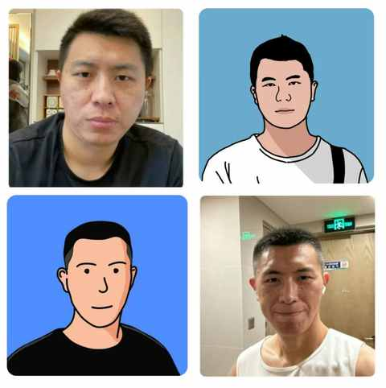
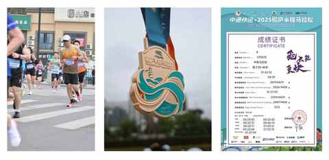
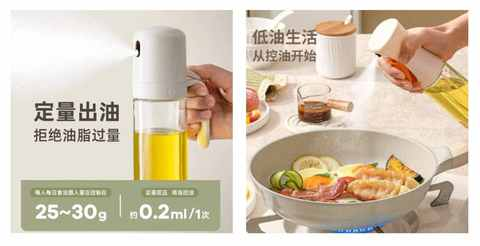
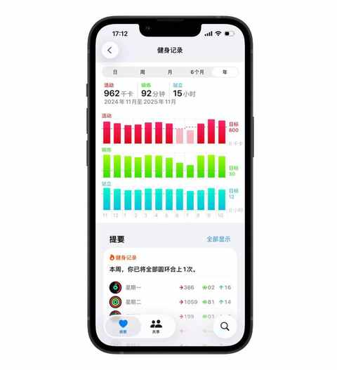

中年减肥成功2年后，才发现维持体重靠的不是毅力，而是这5个微习惯
一、减肥成功两年了
如果一定要说我 30-35 岁 这 5年有什么大的变化，那减肥成功绝对是排在第一个的巨大改变。

我身高177cm，从体重最大的时候大约是 91kg，到现在日常并不费力的维持在 75kg 上下，减掉30 多斤体重的同时身体状态也比以往更好。

在两年多的时间里面并没有反弹，而在这期间并没有天天西兰花和水煮鸡胸肉，反而是饭量相比 90kg 的时候无明显变化。
变化更多的是几个微习惯的调整和养成，让维持体重不再是一个要时刻记在心里和要经常调动意志力的事情。
且不说意志力是稀缺资源，即便能随时调动起意志力去抵抗一些食物的诱惑但那对人也是一个相当大的消耗，约等于伤敌1000自损1200，总有一天会还回来的。
二、几个让我受益匪浅的微习惯
减肥必须要遵守的物理规律之一是：能量守恒定律。
和运动健身相比较，其实每天吃进去多少食物反而是更可控的，而我们大多数人每天都要吃 2-3 餐，在吃方面多花点功夫产生效果之后在运动上也更容易取得成效。
仔细权衡下来，发现下面几个微习惯让我受益匪浅，也早已成为日常：
1️⃣ 勤用喷油壶
中式快炒的核心要义之一：不定量，凭感觉。
可每个人的感觉都不一样，炒菜的时候如果想少放点油， 做到定量必须借助工具，喷油壶则是利器。
有时候在翻炒的过程中觉得油少了，还能再喷几下油。

请放心，油少一些不影响菜的味道，长久下来你会发现一壶5L 的油能用挺久的。
2️⃣ 多蒸煮少爆炒
诚实的说，大部分不放调理的水煮菜的味道都过于平淡。
蔬菜火候掌握好其实还可以，能吃到菜的香味，但如果牛肉和鸡胸肉水煮之后没有调味料直接吃则是极其难以下咽。
这个苦还是健美运动员去承受吧，我们普通人可以放各式各样的调味品，我最常用的是两个类型的：各种口味0脂肪油醋汁和 各种口味的 酱。
重点来了，上图中左上角有一个营养信息表，是每件商品都有的，商家必须如实的公布在包装和宣传图上。
我们平时买东西的时候也可以多留心营养信息表中的各项数值，久而久之能多每天吃进去的热量有比较准确的预估，做到心中有数。
再回到剂量的层面，油醋汁和酱只要把握好每次的用量，完全不会成为负担，反而会让蒸煮的菜味道更有层次，完全不会难以下咽。
麻辣烫就是调味丰富的水煮菜拼盘，只是油脂含量并不低，自己在家做的时候少放油按自己喜欢的风格调味，整体味道也不差的同时更适合长期吃。
3️⃣ 不舍弃 “大餐”
可能你会有疑问，减肥不是不能吃大餐么。
我的答案是：得吃，而且要 及时满足口腹之欲。
主要是基于下面两个原因：
① 堵不如疏
口腹之欲是很难长期抑制的，反而要及时满足，避免意志力被突破后的暴饮暴食。
② 长期主义
每次吃大餐能极大的缓解对某些食物的渴望，也能在接下来几天更好的控制饮食。
一定要引起重视的下面这些：
① 一顿大餐所摄入的热量是惊人的
如果仔细盘点热量总量，可能预估下来的热量是平时一天或两天的热量之和。
② 减肥前期可以一周一次大餐
后面适应了之后可以调整为一周半或两周一次，这样单位时间内的总摄入量也是降低了的。
③ 大餐后的下一顿完全可以不吃
简单喝点咖啡或茶即可。无需担心对肠胃不好，低血糖之类的情况发生。
4️⃣ 注意吃饭顺序和速度
吃饭的顺序及速度与饱腹感息息相关，当你觉得饱了也就不会继续吃了。
那么问题的核心是：如何及时获取到饱腹感这一显著的信号，从而放下筷子。
很早之前，我以为有一个问题想不清楚：为什么当我觉得饱了的时候，过不了一会儿就是吃撑的感觉。
最近几年查了不少资料，也看了一些书，原因极其简单：
消化系统没有及时把吃饱的信号传递给大脑，而这个信号的强弱和咀嚼的次数和进食的顺序息息相关。
最最直接的原因是吃的太快，没有给到肠胃反应时间，大脑收到的信号有延迟，在这个时间差里面又吃了挺多食物。
想比较准确的获得饱腹感，不妨先尝试这两个方式：
① 充分咀嚼
每一口饭菜咀嚼 20-30 下再下咽
② 调整进食顺序
先吃蔬菜，后吃肉和蛋，最后吃米面馒头等。
5️⃣ 每天动一动
没错，是每天都动一动，不是一周几天这种，是每天！

并不是必须跑步或者去健身房那种，而是把运动融入日常生活中。
例如：
- 扔垃圾后，回来的时候爬楼梯
- 在 APP上点咖啡选择自取
- 往返地铁站的时候走快一点，稍微来点强度
- 每周 1-2 次中高强度运动
- 晚饭后打开跳操视频或直播，跟练 15 分钟
- ……
三、重塑日常
守住减肥成果，从来不是靠意志力的死守，而是靠日常的“重塑”。
需要调整在体重偏大时候的日常习惯，逐步调整到适配当下的体重，在这个过程中完成对日常的重塑。不用做大刀阔斧的改变，完全可以从若干个微习惯开始，坚持执行下去便能带来巨大的改变。
所以，与其说我在减肥，不如说我是通过一系列“微习惯”，一点点完成了对生活的“重塑”。
面对健康这一宏大命题，真正的长期主义，往往藏在这些微小而确定的日常里面。以上是我的5个微习惯。你呢？有哪些无痛保持健康的小秘诀？ 欢迎在评论区分享。
近期文章
一个中年男人消费观的 3 个转变
8年驾龄复盘：新手期的每一次手忙脚乱，都成了现在我安全驾驶的“肌肉记忆”
一个中年人的2025年桐庐半马赛后复盘：我的 5 个收获
桐庐半马前24小时：安于日常，拥抱期待
一个中年男人的140次发文，换来第一篇的10万+
为什么说放弃Apple Watch很容易，而真正考验人的是下一块智能手表的选择？
运动后总酸痛？这4个家常小物件，是放松肌肉的“隐形神器”
我的电车购买逻辑：用100kWh大电池的“确定性”，替代三电优化的“不确定性”
从前，有一个笨小孩，他的武器叫“笨功夫”
中年人提高跑量的意外之喜：最大摄氧量首次突破62！
告别选择困难症！翻遍留言区整理的宝藏跑步装备清单！